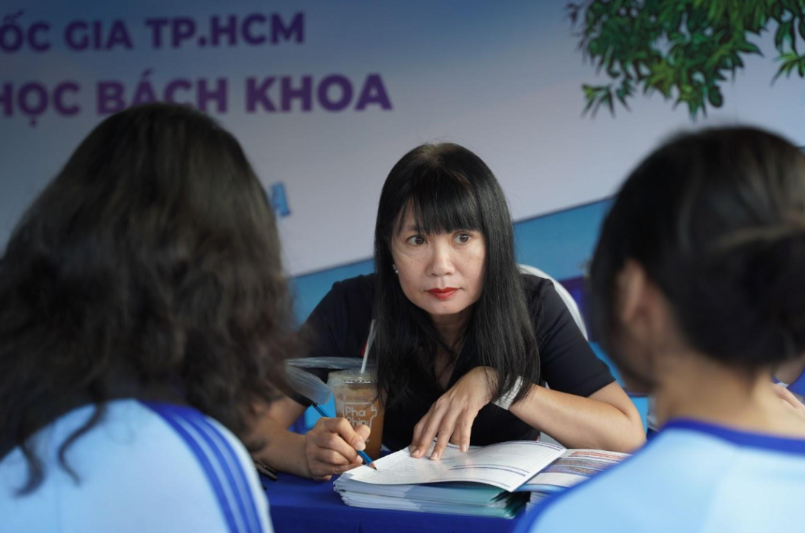
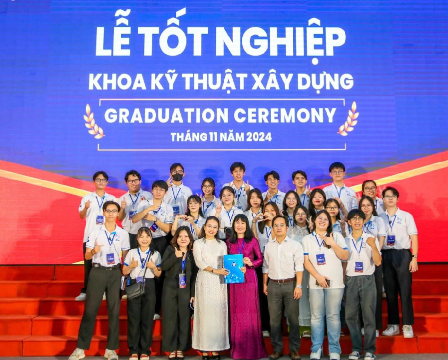

Người đứng sau nhưng lại dẫn đường
Suốt hơn 10 năm gắn bó với công tác tư vấn tuyển sinh, chuyên viên sinh năm 1973 đã giúp bao thế hệ học sinh đặt chân vào giảng đường xứng đáng với công sức đèn sách của mình.
Trong không gian ngập ánh sáng tại tòa nhà A1 của Trường Đại học Bách Khoa (ĐHQG-HCM), chị Nguyễn Thị Thu Hồng đang say sưa tư vấn cho các học sinh quan tâm đến kỳ tuyển sinh năm 2026. Dù tóc đã điểm bạc nhưng ánh mắt sáng và nụ cười vẫn toát lên nguồn năng lượng tràn đầy từ chị.

Làm cho hết mình
Năm 1993, chị Hồng hoàn thành chương trình đào tạo ngành Kỹ thuật Chuyển mạch và được phân công về công tác tại bưu điện xã An Long, huyện Tam Nông, tỉnh Đồng Tháp (nay là xã An Long, tỉnh Đồng Tháp mới). Khi đó, điều kiện làm việc còn nhiều khó khăn, trang thiết bị chưa hiện đại như bây giờ, mọi hoạt động đều phụ thuộc rất nhiều vào con người. Chị đảm nhận vị trí tổng đài viên. Công việc của chị tưởng chừng đơn giản nhưng lại đòi hỏi sự tỉ mỉ, trách nhiệm và tính kỷ luật rất cao.
Những ca trực đêm nối tiếp nhau, những lần kiểm tra máy móc giữa khuya đã trở thành một phần quen thuộc trong cuộc sống của chị. Không phân biệt nam hay nữ, ai cũng phải thay phiên trực để đảm bảo hệ thống vận hành ổn định. “Hồi còn làm bưu điện, cứ cách đêm, không phân biệt trai hay gái, là mình phải trực để kiểm tra dầu và máy nổ. Rồi nó làm cho mình mạnh mẽ như đàn ông vậy đó. Nên dù bất cứ công việc gì tôi cũng làm hết mình”, chị nhớ lại.
Năm 2010, chị Hồng bén duyên với Trường Đại học Bách Khoa TP.HCM trong vai trò Ban thư ký Hội Cựu sinh viên. Đây là bước ngoặt quan trọng đưa chị bước vào môi trường giáo dục - nơi chị sẽ gắn bó lâu dài và tìm thấy ý nghĩa sâu sắc trong công việc của mình.
"Cô Hồng rất tích cực làm các công việc được giao,PGS. TS. Bùi Hoài Thắng, Trưởng Phòng Đào tạo Trường Đại học Bách Khoa (ĐHQG - HCM).
luôn quan tâm sâu sát từng chi tiết để làm sao cho chuyến đi của anh em được thuận lợi nhất".
Trong những ngày đầu tại trường, chị không chỉ thực hiện các công việc hành chính mà còn tham gia tổ chức nhiều hoạt động dành cho sinh viên. Để tạo nên một sự kiện thành công, có những đêm chị Hồng phải tự tay viết từng email cũng như các bài đăng trên mạng xã hội để truyền thông về sự kiện. Chị tâm niệm: “Tâm thế của chị là khi đã nhận việc gì rồi thì phải làm cho hết mình và hoàn thành xuất sắc luôn”.
Năm 2014, chị Hồng được chuyển sang công tác tại Ban Tư vấn tuyển sinh. Chị chuyển từ hỗ trợ hoạt động sang trực tiếp làm việc với phụ huynh và học sinh. Ngay từ những ngày đầu, chị đã nhận ra tầm quan trọng của công việc này. Không chỉ là cung cấp thông tin tuyển sinh, chị còn là cầu nối giữa nhà trường và phụ huynh, giữa những kỳ vọng và thực tế.
Sau 12 năm học tập, mỗi học sinh đều đứng trước một ngã rẽ quan trọng. Việc chọn ngành, chọn trường không chỉ đơn thuần là một quyết định trước mắt mà còn ảnh hưởng lâu dài đến tương lai. Chính vì vậy, mỗi câu trả lời, mỗi lời tư vấn đều cần sự cẩn trọng và trách nhiệm. Chị Hồng luôn trăn trở làm sao để mỗi học sinh được đặt đúng vị trí của mình. Chị muốn các em chọn đúng ngành nghề phù hợp với năng lực, sở thích và định hướng tương lai. Công việc tư vấn tuyển sinh không có ranh giới rõ ràng về thời gian. Khi nhiều người kết thúc ngày làm việc sau 8 giờ tại cơ quan, thì với chị, công việc vẫn tiếp tục. Những tin nhắn, cuộc gọi từ phụ huynh có thể đến bất cứ lúc nào. “Phụ huynh cần mình nên mới hỏi. Nếu mình chậm trả lời, họ sẽ bất an, không yên tâm làm việc khác. Nghĩ vậy nên tôi cứ trả lời liên tục”, chị chia sẻ. Có những ngày, chị gần như không rời điện thoại. Nhưng với chị, đó không phải là áp lực mà là trách nhiệm với những niềm tin mà phụ huynh đã gửi gắm.
Luôn quan tâm sâu sát
Không chỉ làm việc tại trường, chị Hồng còn thường xuyên tham gia các chuyến công tác tư vấn tuyển sinh tại các tỉnh thành. Để mỗi chuyến đi diễn ra suôn sẻ, chị quan tâm từ những điều nhỏ nhất: lựa chọn phương tiện di chuyển phù hợp, sắp xếp lịch trình hợp lý, chuẩn bị bữa ăn cho các thành viên trong đoàn. Với chị, sự thuận tiện của cả đoàn cũng là một yếu tố quan trọng góp phần vào thành công của chuyến đi.
PGS. TS. Bùi Hoài Thắng, Trưởng Phòng Đào tạo Trường Đại học Bách Khoa (ĐHQG - HCM), người đồng hành cùng cô Hồng trong hơn 10 năm, nhận xét: “Cô Hồng rất tích cực làm các công việc được giao, luôn quan tâm sâu sát từng chi tiết để làm sao cho chuyến đi của anh em được thuận lợi nhất”. Sự chu đáo ấy không chỉ thể hiện ở công việc mà còn trong cách chị đối xử với đồng nghiệp. Chị luôn quan sát, lắng nghe và sẵn sàng hỗ trợ khi cần thiết.
Hiện nay, chị công tác tại Phòng Quản trị Thương hiệu của trường. Dù đảm nhiệm vị trí mới, chị vẫn không ngừng đóng góp cho công tác tư vấn tuyển sinh. Với kinh nghiệm nhiều năm, chị tích cực chia sẻ, hướng dẫn cho các cán bộ trẻ. Chị Phạm Nhật Lệ, hiện là Chuyên viên Tư vấn tuyển sinh của trường đồng thời là cựu sinh viên, cho biết: “Dù trước đây là thành viên trong câu lạc bộ do chị quản lý hay hiện tại là đồng nghiệp, thì chị Hồng vẫn luôn tận tình dẫn dắt và hỗ trợ cho chị hết lòng”.

Ngoài ra, chị Thu Hồng còn giữ vai trò là người đồng hành và dẫn dắt Câu lạc bộ Đại sứ Bách Khoa suốt hơn một thập kỷ. Không chỉ quản lý các hoạt động của câu lạc bộ, chị còn là chỗ dựa tinh thần, luôn sẵn lòng tư vấn học tập và hỗ trợ các bạn sinh viên mỗi khi gặp khó khăn. Dù khoảng cách thế hệ khá xa, nhưng trong mắt các thành viên, chị luôn gần gũi và thân thiết. Vì vậy, tất cả thành viên đều gọi chị Thu Hồng bằng “chị”. “Lúc mới tham gia, em bị bất ngờ không hiểu vì sao mọi người đều gọi cô Thu Hồng là chị. Rồi dần dần em cũng quen gọi như vậy”, Nguyễn Duy Ngọc, hiện là sinh viên khóa 2022 và là Chủ nhiệm Câu lạc bộ Đại sứ Bách Khoa, thổ lộ. Sự quan tâm của chị còn thể hiện ở những chi tiết rất đời thường. Có khi để các “đại sứ sinh viên” được tham gia chuyến tư vấn ở tỉnh xa, chị sẵn sàng xin số điện thoại của phụ huynh để trực tiếp gọi điện xin phép. Ngay cả khi các bạn đã tốt nghiệp, nhiều cựu sinh viên vẫn tìm đến chị để tâm sự, chia sẻ và xin lời khuyên mỗi khi gặp trắc trở trong công việc hay cuộc sống.
Hiện tại, mỗi khi có thời gian rảnh, chị lại tranh thủ học tiếng Anh qua ứng dụng. Chị mong muốn nâng cao khả năng giao tiếp ngoại ngữ để trong tương lai có thể tư vấn cho các em học sinh quốc tế trong xu hướng liên kết với nước ngoài mà nhà trường đang triển khai hiện nay.
Dù là chuyên viên Thu Hồng, cô Hồng hay chị Hồng trong mắt mỗi người, thì người phụ nữ ấy vẫn đang tiếp tục tìm cách làm tốt hơn công việc của mình.
Trong một lần tư vấn tuyển sinh, chị Hồng trò chuyện với một phụ huynh tự nhận là giáo viên. Sau vài ngày, chị phát hiện người này chỉ là một phụ huynh bình thường. Do trải nghiệm không tích cực trước đó nên chị phải "đóng vai" để được lắng nghe. Con chị ấy học lực tốt nhưng giai đoạn sát ngày thi lại hoang mang, mất phương hướng khiến cả gia đình lo lắng. Nhờ sự tận tình của chị Hồng, em đã lấy lại tinh thần, vượt qua kỳ thi và đỗ vào Trường Đại học Bách Khoa. Trong suốt kỳ thi, hai người hầu như trò chuyện mỗi ngày. Từ đó, cả hai trở thành thân thiết như chị em. Mỗi lần về Tiền Giang - quê của chị phụ huynh, chị Hồng đều ghé thăm gia đình.